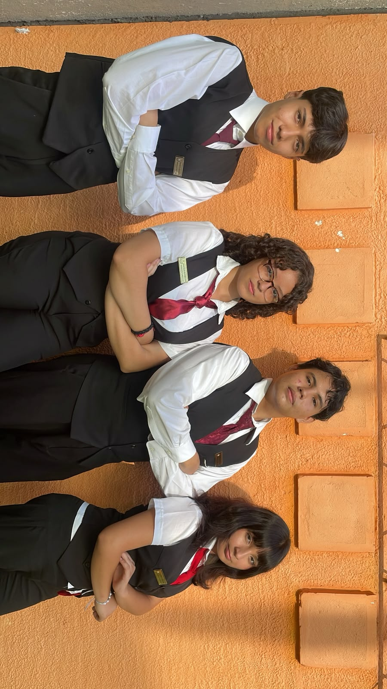

🌐
Bachillerato Técnico Productivo
Una preparación práctica vinculada con actividades del sector productivo y las oportunidades del entorno laboral.
Fotos de la Especialidad

Especialidades:
Servicios Turísticos
Formación enfocada en la gestión de servicios de hospitalidad, agencias de viajes, guiado y dinamización del sector turístico. Promueve la atención, la comunicación y el conocimiento del entorno.
Logística Global Comercial
Capacitación en cadenas de suministro, operaciones aduaneras, gestión de inventarios y transporte de mercancías. Se fortalecen la organización y la comprensión de los procesos comerciales.